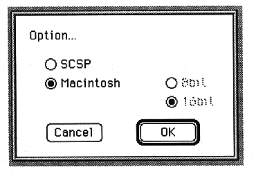
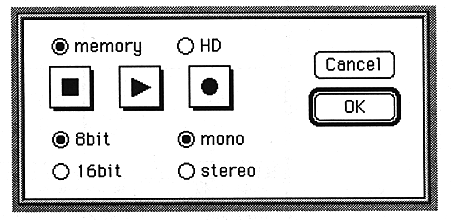

Select Option ... from the SCSP menu. The screen for setting the output and input destination devices appears.

Select SCSP. 8-bit and 16-bit radio buttons are displayed.

Set the output to either 8bit or 16bit.
Press the OK button. The device settings are complete.